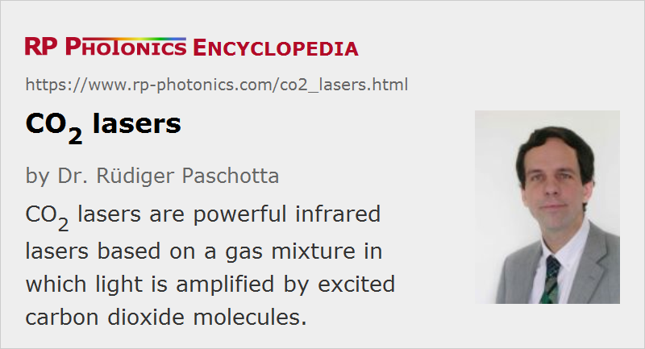

CO2 Lasers
Definition: infrared lasers based on a gas mixture in which light is amplified by carbon dioxide molecules
Alternative term: carbon dioxide lasers
German: CO2-Laser, Kohlendioxidlaser
How to cite the article; suggest additional literature
Author: Dr. Rüdiger Paschotta
The CO2 laser (carbon dioxide laser) is a molecular gas laser based on a gas mixture as the gain medium, which contains carbon dioxide (CO2), helium (He), nitrogen (N2), and possibly some hydrogen (H2), water vapor and/or xenon (Xe). Such a laser is electrically pumped via an electrical gas discharge, which can be operated with DC current, with AC current (e.g. 20–50 kHz) or in the radio frequency (RF) domain. Nitrogen molecules are excited by the electric discharge into a metastable vibrational level and transfer their excitation energy to the CO2 molecules when colliding with them. The exited CO2 molecules then largely participate in the laser transition. Helium serves to depopulate the lower laser level and to remove the heat. Other constituents such as hydrogen or water vapor can help (particularly in sealed-tube lasers) to reoxidize carbon monoxide (formed in the discharge) to carbon dioxide.
CO2 lasers typically emit at a wavelength of 10.6 μm, but there are other spectral lines in the region of 9–11 μm (particularly at 9.6 μm). In most cases, average output powers are between some tens of watts and many kilowatts. The power conversion efficiency can be well above 10%, i.e., it is higher than for most gas lasers (due to a particularly favorable excitation pathway), also higher than for lamp-pumped solid-state lasers, but lower than for many diode-pumped lasers.
Due to their high output powers and long emission wavelengths, CO2 lasers require high-quality infrared optics, often made of materials like zinc selenide (ZnSe) or zinc sulfide (ZnS).
CO2 Laser Types
The family of CO2 lasers is very diverse:
- For laser powers between a few watts and a several hundred watts, it is common to use sealed-tube or no-flow lasers, where the laser bore and gas supply are contained in a sealed tube. Such lasers are compact and rugged, and reach operation lifetimes of several thousands of hours.
- High-power diffusion-cooled slab lasers (not to be confused with solid-state slab lasers) have the gas in a gap between a pair of planar water-cooled RF electrodes. The excess heat is efficiently transferred to the electrodes by diffusion, if the electrode spacing is made small compared with the electrode width. Several kilowatts of output are possible.
- Fast axial flow lasers and fast transverse flow lasers are also suitable for multi-kilowatt continuous-wave output powers. The excess heat is removed by the fast-flowing gas mixture, which passes an external cooler before being used again in the discharge.
- Transverse excited atmosphere (TEA) lasers have a very high (about atmospheric) gas pressure. As the voltage required for a longitudinal discharge would be too high, transverse excitation is done with a series of electrodes along the tube. TEA lasers are operated in pulsed mode only, as the gas discharge would not be stable at high pressures. They often produce average output powers below 100 W, but can also be made for powers of tens of kilowatts (combined with high pulse repetition rates).
- There are gas dynamic CO2 lasers for multi-megawatt powers (e.g. for anti-missile weapons), where the energy is not provided by a gas discharge but by a chemical reaction in a kind of rocket engine.
The concepts differ mainly in the technique of heat extraction, but also in the gas pressure and electrode geometry used. In low-power sealed-tube lasers (used e.g. for laser marking), waste heat is transported to the tube walls by diffusion or a slow gas flow. The beam quality can be very high. High-power CO2 lasers utilize a fast forced gas convection, which may be in the axial direction (i.e., along the beam direction) or in the transverse direction (for the highest powers).
Due to their high powers and high drive voltages, CO2 lasers raise serious issues of laser safety. However, their long operation wavelength makes them relatively eye-safe at low intensities.
Applications of CO2 Lasers
CO2 lasers are widely used for laser material processing, in particular for
- cutting plastic materials, wood, die boards, etc., exhibiting high absorption at 10.6 μm, and requiring moderate power levels of 20–200 W
- cutting and welding metals such as stainless steel, aluminum or copper, applying multi-kilowatt powers
- laser marking of various materials
Other applications include laser surgery (including ophthalmology) and range finding.
Competition with Solid-state Lasers
CO2 lasers used for material processing (e.g. welding and cutting of metals, or laser marking) are in competition with solid-state lasers (particularly YAG lasers and fiber lasers) operating in the 1-μm wavelength regime. These shorter wavelengths have the advantages of more efficient absorption in a metallic workpiece, and the potential for beam delivery via fiber cables. (There are no optical fibers for high-power 10-μm laser beams.) The potentially smaller beam parameter product of 1-μm lasers can also be advantageous. However, the latter potential normally cannot be realized with high-power lamp-pumped lasers, and diode-pumped lasers tend to be more expensive. For these reasons, CO2 lasers are still widely used in the cutting and welding business, particularly for parts with a thickness greater than a few millimeters, and their sales make more than 10% of all global laser sales (as of 2013). This may to some extent change in the future due to the development of high-power thin-disk lasers and advanced fiber cables in combination with techniques which exploit the high beam quality of such lasers.
Questions and Comments from Users
Here you can submit questions and comments. As far as they get accepted by the author, they will appear above this paragraph together with the author’s answer. The author will decide on acceptance based on certain criteria. Essentially, the issue must be of sufficiently broad interest.
Please do not enter personal data here; we would otherwise delete it soon. (See also our privacy declaration.) If you wish to receive personal feedback or consultancy from the author, please contact him e.g. via e-mail.
By submitting the information, you give your consent to the potential publication of your inputs on our website according to our rules. (If you later retract your consent, we will delete those inputs.) As your inputs are first reviewed by the author, they may be published with some delay.
Bibliography
| [1] | C. K. N. Patel, “Continuous-wave laser action on vibrational–rotational transitions of CO2”, Phys. Rev. 136 (5A), A1187 (1964), doi:10.1103/PhysRev.136.A1187 |
| [2] | C. K. N. Patel, “Interpretation of CO2 optical maser experiments”, Phys. Rev. Lett. 12 (21), 588 (1964), doi:10.1103/PhysRevLett.12.588 |
| [3] | A. Robinson and D. Johnson, “A carbon dioxide laser bibliography, 1964–1969”, IEEE J. Quantum Electron. 6 (10), 590 (1970), doi:10.1109/JQE.1970.1076334 |
| [4] | P. T. Woods et al., “Stable single-frequency carbon dioxide lasers”, J. Phys. E: Sci. Instrum. 9, 395 (1976), doi:10.1088/0022-3735/9/5/021 |
| [5] | A. L. S. Smith and J. Mellis, “Operating efficiencies in pulsed carbon dioxide lasers”, Appl. Phys. Lett. 41, 1037 (1982), doi:10.1063/1.93385 |
| [6] | K. M. Abramski et al., “Power scaling of large-area transverse radiofrequency discharge CO2 lasers”, Appl. Phys. Lett. 54, 1833 (1989), doi:10.1063/1.101250 |
| [7] | O. Svelto, Principles of Lasers, Plenum Press, New York (1998) |
See also: gas lasers, molecular lasers, laser marking, high-power lasers, solid-state lasers, infrared optics
and other articles in the category lasers
|  |
If you like this page, please share the link with your friends and colleagues, e.g. via social media:
These sharing buttons are implemented in a privacy-friendly way!